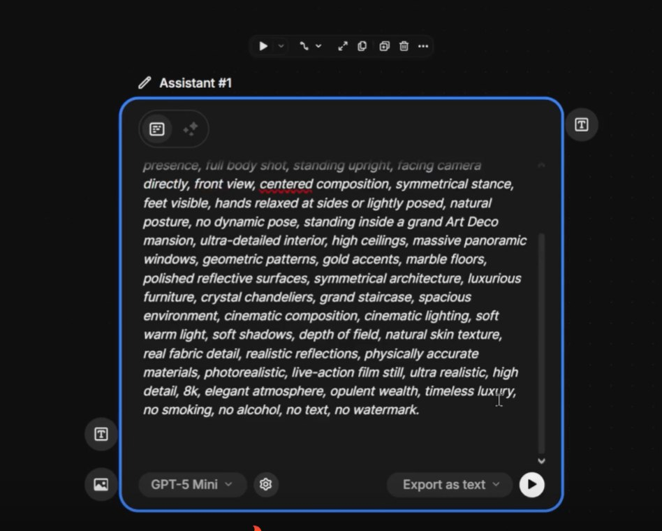
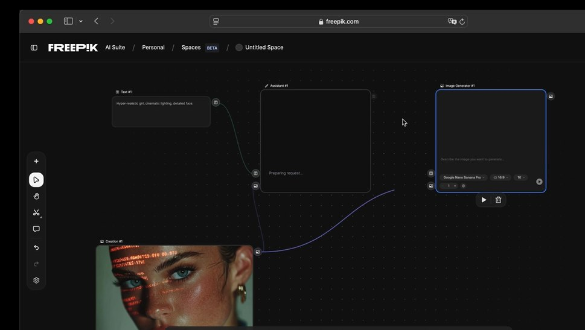
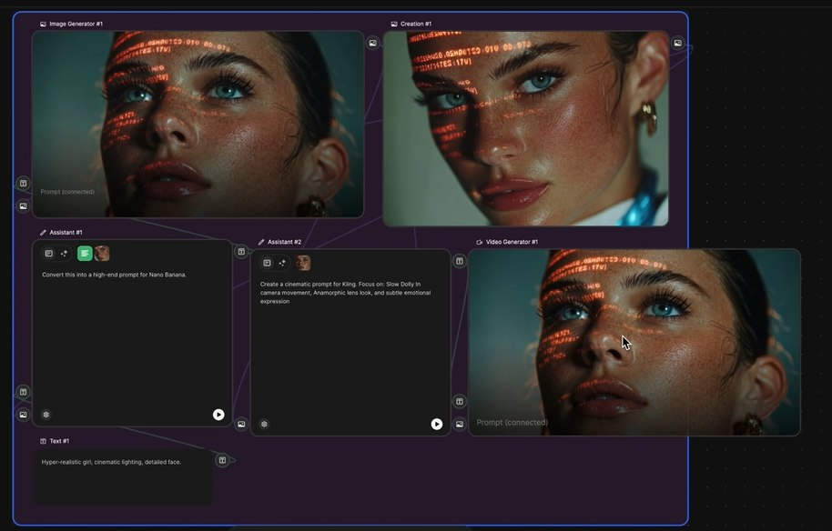

👄 Quando Usar Lip Sync
Lip sync é uma ferramenta específica: use-a apenas em cenas onde o personagem fala diretamente para a câmera. Para narração over, monólogo interno ou diálogo fora de quadro, voiceover puro funciona melhor — e evita o uncanny valley.
✓ Use Lip Sync Quando
- ✓Personagem em close-up falando para a câmera
- ✓Talking head, entrevista, depoimento
- ✓Diálogo curto e direto entre personagens
✗ Evite Quando
- ✗Narração over (use Voiceover puro)
- ✗Personagem em perfil ou de costas
- ✗Plano amplo onde a boca não é visível

Close de personagem em frame frontal — cenário ideal para aplicação de lip sync
📸 Requisitos da Imagem
Lip sync funciona apenas quando a imagem-base atende a critérios técnicos. Rosto frontal, boa iluminação e alta resolução são inegociáveis. Sem isso, o resultado é grotesco.
📸 Checklist da Imagem
- •Frontal: rosto inclinado no máximo 15° da câmera
- •Iluminação: boca claramente visível, sem sombras duras
- •Resolução: mínimo 1024x1024, ideal 2048+
- •Boca relaxada: evitar sorrisos exagerados ou bocas abertas no input
- •Sem oclusão: nada cobrindo a boca (mão, microfone, máscara)

Retrato com iluminação frontal limpa — atende todos os requisitos para lip sync de qualidade
🎤 Preparando o Áudio
O áudio é metade do sucesso do lip sync. Clipes curtos, limpos e com voz clara produzem resultado profissional — clipes longos, ruidosos ou com música embutida produzem desastre.
Duração curta
Mantenha clipes abaixo de 30 segundos. Para falas mais longas, divida em múltiplos clips e una na montagem.
Áudio limpo
Sem música de fundo, sem ruído ambiente, sem reverb forte. Voz seca é o input ideal.
Voz clara e articulada
Vozes que articulam bem geram lip sync mais preciso. Vozes sussurradas ou rápidas confundem o algoritmo.
🔗 Processo no Spaces
No Spaces, lip sync é um node simples: Imagem + Áudio → Lip Sync Node → Vídeo. A imagem pode vir do Image Generator, e o áudio pode vir do Voiceover Node — tudo no mesmo canvas.
[Image Node] ─────┐
├──→ [Lip Sync Node] ──→ [Talking Video]
[Voiceover Node] ────┘

Lip Sync Node conectado a uma imagem e um clipe de áudio — saída pronta para integrar no filme
🚫 Limitações
Conhecer as limitações evita frustração. Lip sync atual ainda falha em algumas situações específicas — saber quando NÃO usar é tão importante quanto saber usar.
Perfil ou 3/4
A boca precisa estar visível de frente. Ângulos laterais quebram completamente o lip sync.
Cenas escuras
Sem iluminação na boca, o algoritmo não tem referência para deformar. Resultado: artefatos visuais grotescos.
Múltiplos rostos
Imagens com mais de uma pessoa confundem o sistema. Use sempre um rosto isolado por clipe.

Imagem em perfil — exemplo de quando NÃO usar lip sync, pois a boca não está totalmente visível para a câmera
💡 Dica Pro
A combinação mais poderosa para criar um talking head completo é Voiceover Node + Lip Sync Node no mesmo pipeline. Texto entra de um lado, vídeo com personagem falando sai do outro — sem precisar de gravação real.
💡 Pipeline Completo
[Texto do roteiro]
│
▼
[Voiceover Node] ──→ áudio limpo
│ │
▼ ▼
[Image Node] ───────→ [Lip Sync Node]
│
▼
[Personagem falando]

Resultado final: talking head sintético gerado integralmente no Spaces, do roteiro à imagem em movimento sincronizada
💡 Boas Práticas
Use lip sync com moderação no seu filme. Um único talking head impactante é mais poderoso do que cinco mediócres. Reserve para os momentos onde a fala direta amplia a emoção.
✅ Resumo do Módulo 6.8
Próximo Módulo:
6.9 — Montagem Final: combinar clipes, editar no Clip Editor, finalizar continuidade e exportar.